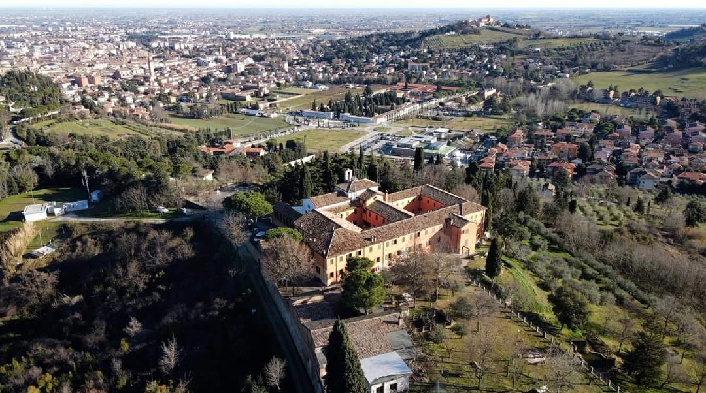
Colle Garampa · Cesena
Una fraternità di frati cappuccini che vive a Cesena dal 1559. Messe, confessioni, ascolto, ospitalità e cammini per chi ha voglia di fermarsi.
Chiesa del convento, via Cappuccini 341, Cesena.
D'estate, quando il tempo lo permette, la messa si celebra in giardino, sotto gli alberi.
I frati sono disponibili anche per un colloquio personale: basta suonare al convento o telefonare.
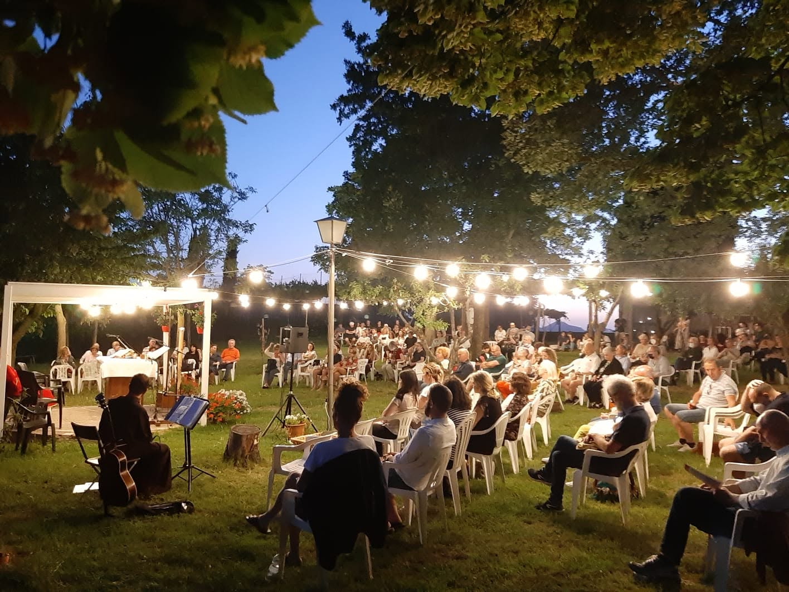
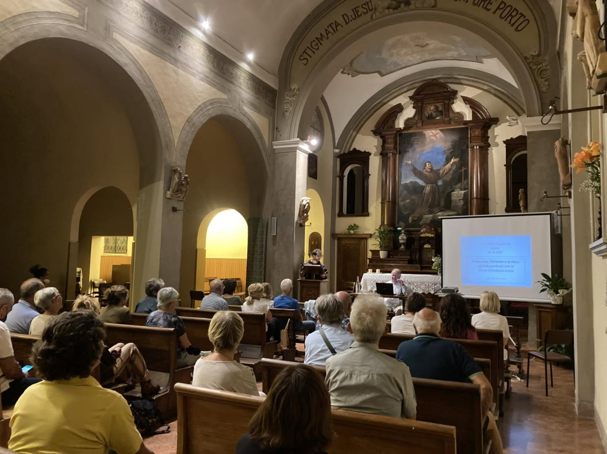
Sul Colle Garampa, sopra la città, dal 1559.
I Cappuccini sono a Cesena da oltre quattro secoli e mezzo. Tornati sul Colle Garampa nel 1869, riacquistarono l'intero convento nel 1881 e da allora non se ne sono più andati: l'edificio conserva il tipico stile cappuccinesco, essenziale e povero.
Qui fu maestro dei novizi padre Guglielmo Gattiani, a cui nel 2003 è stato dedicato un monumento; la sua salma riposa nel porticato della chiesa.
Attorno al convento ci sono il giardino, l'anfiteatro, l'orto e la vigna: spazi che d'estate diventano il cuore della vita comune.
[ I nomi dei frati della fraternità, con una riga ciascuno ]
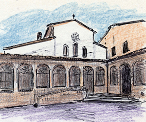
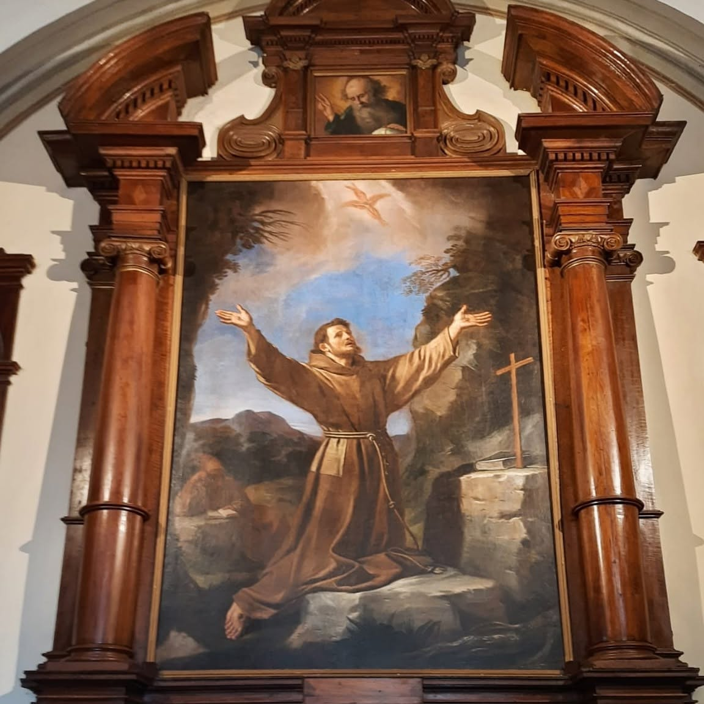
Sopra l'altare, la grande tela di San Francesco che riceve le stimmate. Un luogo raccolto, che d'estate si apre al giardino e che accoglie anche incontri, conferenze e momenti di preghiera aperti alla città.
Attorno alla fraternità gira una quantità sorprendente di cose: la vendemmia, la cucina, il teatro per i bambini, le conferenze sotto gli olivi, la processione della Madonna del Buon Consiglio. Chi passa dal convento le trova, e spesso ci resta.
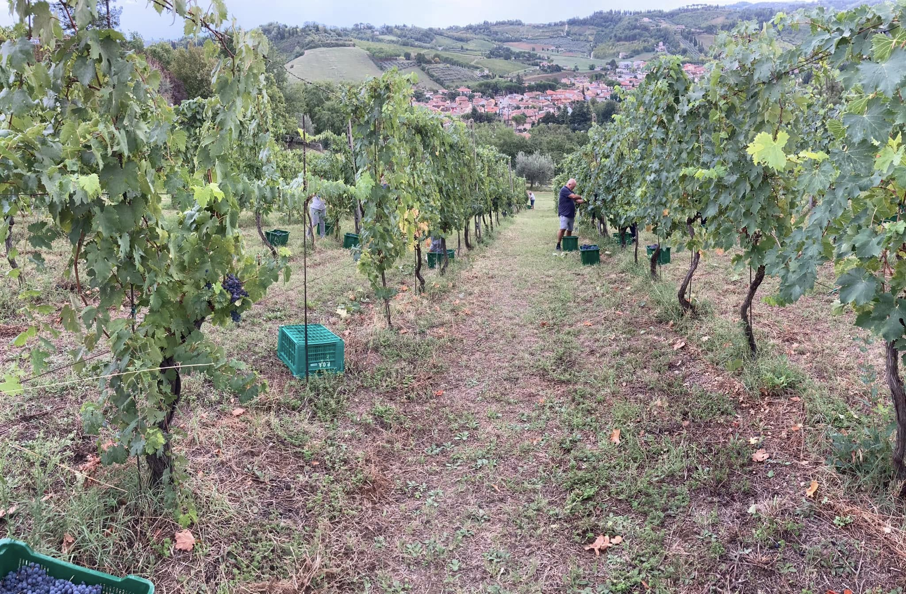
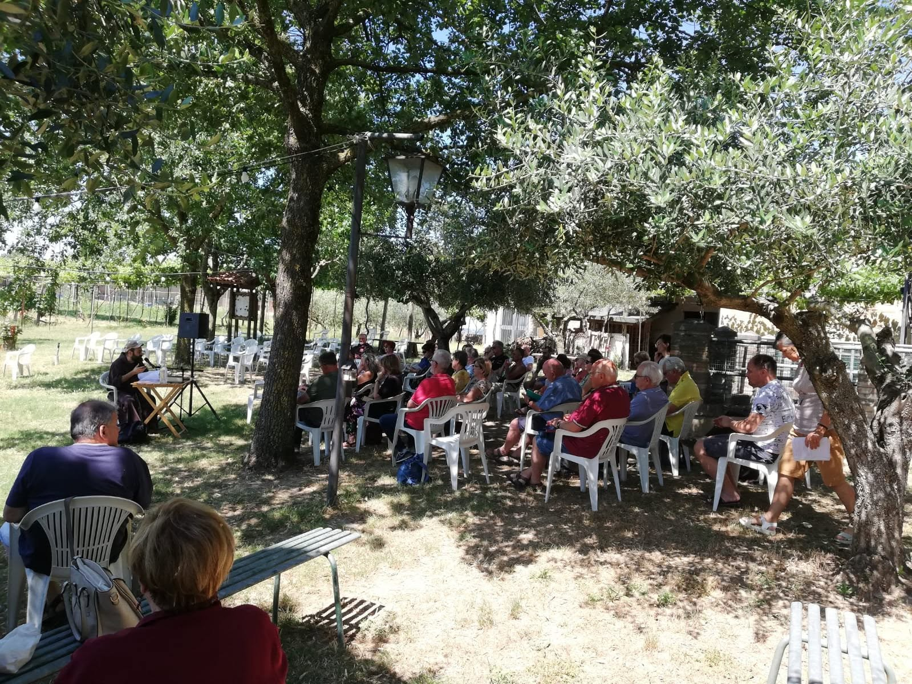
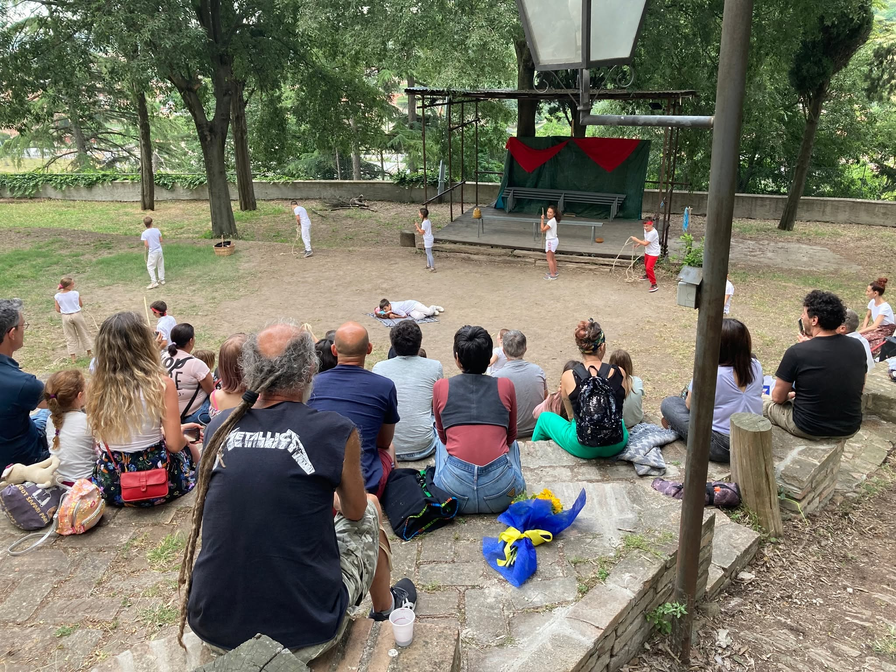
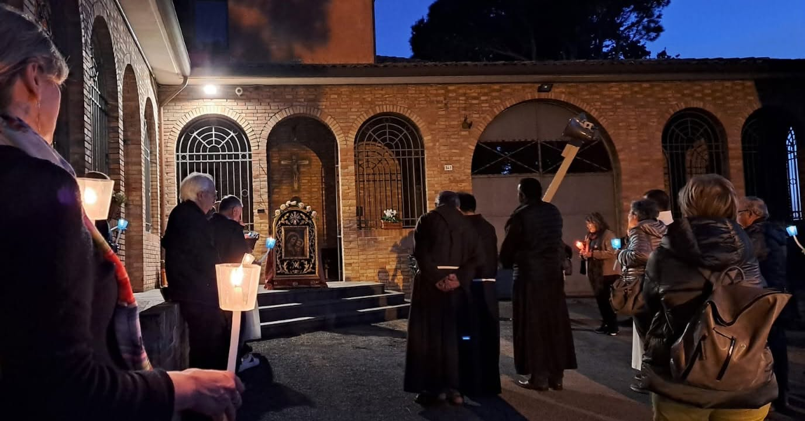
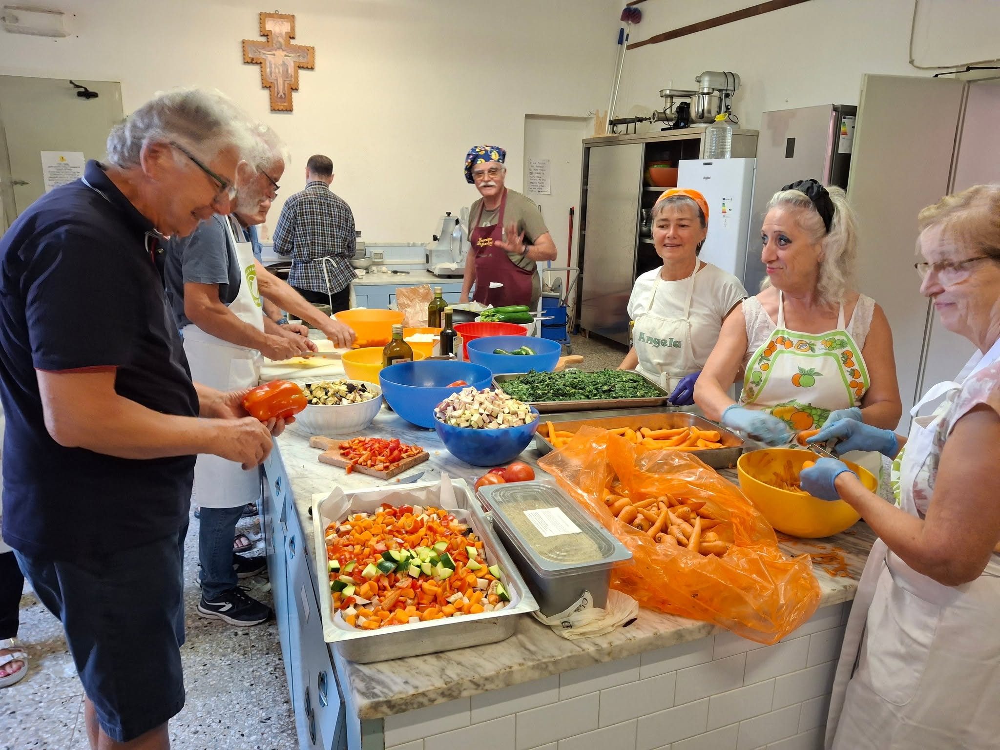
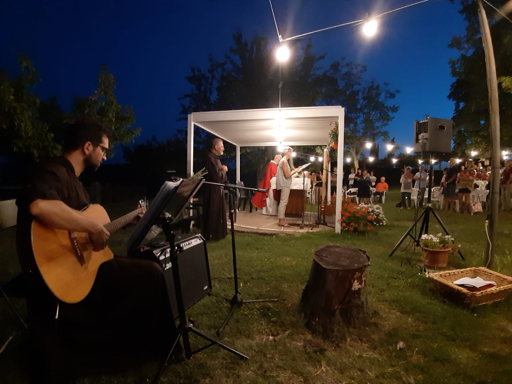
Tutti gli appuntamenti vengono pubblicati sui canali social, aggiornati di continuo.
Percorsi formativi francescani per fidanzati e giovani coppie di sposi. Non sostituiscono i cammini delle parrocchie e delle diocesi: offrono un sostegno in più, alla luce della spiritualità francescana.
Come si svolge un incontro. Un breve momento di preghiera, l'introduzione al tema e le indicazioni per il lavoro a casa. Poi lo spazio di condivisione nella coppia, la condivisione e l'ascolto in gruppo con le coppie animatrici, e la preghiera finale.
Si può iniziare in qualsiasi momento: l'itinerario ha un andamento ciclico.
Una leggera, una impegnativa. Si può cominciare da quella che si preferisce.
Apericena e comunità per ragazzi e ragazze dai 19 ai 28 anni. Una serata di cibo e bevande, giochi, dialogo e spirito francescano. Si mangia, si gioca, si parla.
Info e adesioni: Arianna 366 176 0390 · Bernardo 340 888 4921
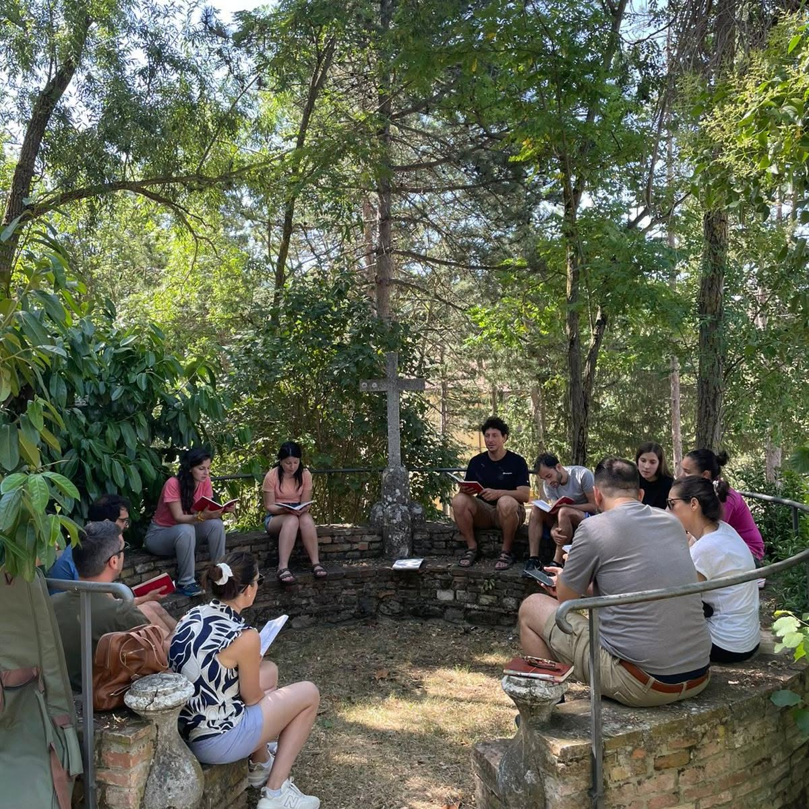
A volte mi sento scentrato, e lento o quasi bloccato nelle scelte fondamentali della vita.
Francesco d'Assisi si era decentrato, liberandosi dall'invadenza del suo io per aprirsi a Dio, alla sua azione e alla sua chiamata: una vita in armonia con se stesso, con il Signore, con i fratelli e con tutte le creature.
A volte avvertiamo il desiderio, ma anche la paura, di scegliere. Francesco ha varcato con fede e coraggio la porta della decisione e si è messo in cammino.
Se busso alla porta del convento è per chiedere un'esperienza che mi metta in cammino, che mi apra a un ascolto profondo di me stesso e del Signore, e mi porti a decidere.
La porta è aperta: si può condividere per un periodo la ferialità della vita francescano-cappuccina.
Gruppi e cammini che vivono attorno alla fraternità.
Laici che vivono il Vangelo secondo la forma di san Francesco, nella vita di ogni giorno. Gli incontri seguono un tema che accompagna l'anno: da un'idea di Gesù di Nazareth, per la regola di san Francesco d'Assisi, una proposta per il nostro tempo.
Informazioni: Chiara 338 147 9300 · Claudio 388 391 4330
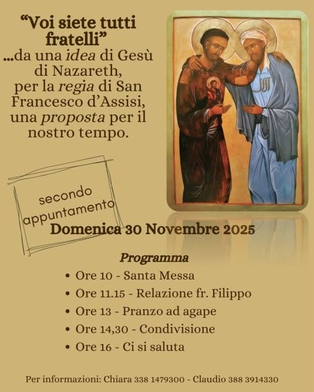
Attorno alla figura di padre Guglielmo Gattiani, maestro dei novizi in questo convento, sepolto nel porticato della chiesa.
[ testo e referente da inserire ]
Il convento offre ospitalità a chi cerca un tempo di silenzio, di ritiro o di passaggio.
[ a chi è rivolta, come si prenota ]
Convento dei Frati Minori Cappuccini — via Cappuccini 341, 47521 Cesena (FC)